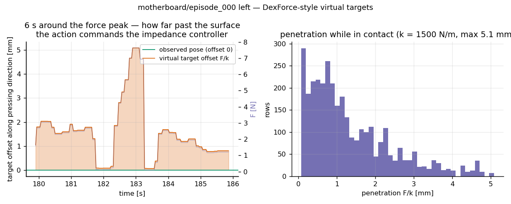

React 的动作由 OptiTrack 跟踪的传感器位姿计算而来——和所有 UMI 类数据一样,演示位姿就是实际达到的位姿。刚度控制器输出 F = k·(target − actual), 因此复现这些动作只能复现运动,按压的意图力恒为零。 本页在真实 episode 数据上展示每个动作如何被变换,以及这个变换值多少。
36 个 episode · 72 个传感器侧 全程无 F/T 传感器 ↖ 完整方法与验证(英文) English动作仍然是位姿。自由空间中 F̂n = 0,目标就是观测位姿——什么都不变。 接触时,目标沿 gel 法向越过接触面,偏移量恰好是刚度为 k 的阻抗控制器要输出演示力所需的位移。 不新增动作维度,部署端不需要力控接口——即 DexForce 式变换(arXiv:2501.10356), 只是驱动它的力来自触觉估计而非力传感器测量。
motherboard/2026-05-10/episode_000 (左传感器)以最强按压为中心的 90 秒。上:估计的法向力。 下:变换对动作的全部效果——目标相对观测位姿沿 gel 法向的偏移。 青色零线就是原始动作;这段窗口里传感器本身扫过 ±170 mm, 所以偏移单独用毫米刻度画出。
拖动 / 悬停查看 · 数据为逐行真实输出,非示意图
为什么这对训练重要。在原始位姿上训练的策略学到的是 "碰到表面就停":标签说指尖停在接触面上,部署时控制器输出的力只是跟踪误差碰巧产生的残余。 用力信息化目标后,标签本身编码了按多重——DexForce 在带力测量的拖动示教上测得: 不做这个修正任务成功率接近零,做了是 76%;这里同样的变换由触觉估计的力驱动, 估计器已对 FEA 真值验证(混合 ρ=0.70,未见过的按压头形状 0.85——见主页(英文))。

驱动动作变换的力信号,与触觉流实时对齐
# 每个 episode 的力估计以 npz 形式随 release 一起发布
import numpy as np
from force_recovery.dexforce import force_informed_targets, gel_axis
from force_recovery.evaluate import median3_fresh
z = np.load("force_recovery/motherboard/2026-05-10/episode_000_left.npz")
force = median3_fresh(z["force_normal_n"], is_new) # 只在 fresh 帧上去尖峰
act = force_informed_targets(pose, force, gel_axis("motherboard", "left"))
train_targets = act.target_pos # (T,3) —— 直接替换位姿标签需要直说的告诫:绝对牛顿值带有 FEATS 定标的不确定性(跨传感器刻度漂移 2–4×;
集内相对力才是可靠的部分);剪切主导的接触是法向力估计器的盲区;
旧录制的触觉有效更新率约 8.5 fps——tactile_*_is_new
标记了哪些行携带新的力证据。